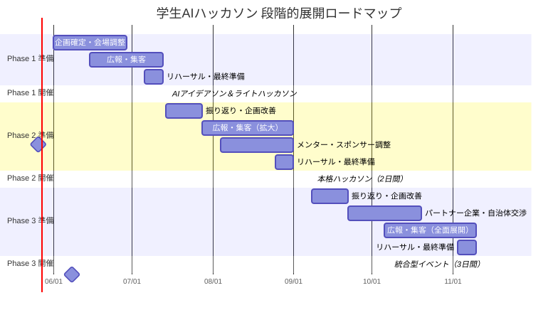

正式イベント名: DISRUPT AI Hackathon (with KANSAI)～Create Liberal＆Sciences～（仮称）
会場: QUINTBRIDGE（大阪・NTT西日本本社内）
運営主体: DISRUPT AI Hackathon (with KANSAI)～Create Liberal＆Sciences～ 運営事務局（コアメンバー6名）
発起人・総合統括: 田窪 佑一朗 氏
後援・外部連携: 本多 竜之介 氏（JGCI アドバイザー） ｜ 一般社団法人 Japan Grand Challenge研究会（JGCI） / 他、複数自治体および自治体連携団体
ターゲット: AI技術に興味関心のある学生（文系・理系問わず）
想定規模: 参加者80名以上（Phase 3 フラグシップ開催時）
策定日: 2026年5月26日
本ハッカソンを成功させるため、「すでに味方として連携しているコアメンバー」「今後説得・巻き込みが必要なパートナー」「価値を提供するターゲット」の3層に分けてステークホルダーを整理します。

| 分類 | 関係者 | 立ち位置と今後のアクション |
|---|---|---|
| 🟢 味方 | 田窪 氏 / 運営事務局 | 企画の主体。実務と全体統括を担う、最も強固なコアチーム。 |
| 🟢 味方 | 本多 氏 / JGCI | 強力な後援者。外部ネットワーク（企業・自治体）との接続役であり、社会実装のリアリティを担保する。 |
| 🟡 説得対象 | QUINTBRIDGE | 【最重要説得対象】 会場の無償提供を取り付けるため、本企画の社会的意義（学生育成・地域共創）を訴求する。 |
| 🟡 説得対象 | 協賛企業 | 運営資金とメンターを確保するための営業先。採用ブランディングや若手アイデア獲得のメリットを提示する。 |
| 🟡 説得対象 | 自治体 | 「リアルな社会課題」を提供してもらうための交渉先。特にPhase 3での連携を目指す。 |
「文系も参加しやすく、理系も物足りなさを感じないAIハッカソン」
本イベントの核心は、学生がAIを単なるツールとして使うのではなく、AIを活用したビジネス・社会実装・課題解決を真剣に考える場を提供することにあります。
単なる技術コンテストではなく、学生が社会課題・地域課題を自らリサーチし、AI・ノーコード技術を活用して社会実装可能なアイデアへ落とし込む**実践型イベント（アントレプレナーシップ教育）**として設計します。
AI時代の価値創出には、技術だけではなく、課題発見・ユーザー理解・企画設計・事業性・発信力が不可欠。ノーコードAIを活用することで技術経験の有無に関わらず参加でき、かつ審査でAI活用の妥当性・実装可能性・社会実装性まで評価することで、理系にとっても挑戦価値のあるイベントにします。
| 文系学生が担える役割 | 理系学生が担える役割 | 共通で担える役割 |
|---|---|---|
| 社会課題リサーチ | AI活用設計 | 課題定義 |
| 地域課題リサーチ | ノーコード実装 | 解決策設計 |
| ユーザー理解 | プロトタイプ構築 | チーム内意思決定 |
| 企画設計 | データ活用 | 発表準備 |
| ビジネスモデル検討 | 技術検証 | 社会実装可能性の検討 |
| 発表構成・ストーリー設計 | 実装可能性の検討 | |
| 企業・自治体向け説明 | ツール選定 |
本プロジェクトを推進するにあたり、何があっても死守すべき最低ライン（MUST）と、理想的な大成功ライン（HOPE）を切り分けて整理します。これにより、運営チーム内での意思決定基準を明確にします。
本ハッカソンの「存続と意義」に関わる必須要件です。
本企画の影響力を最大化し、次なる展開（事業化・法人化等）へと繋げるための希望要件です。

[!NOTE]
上記日程は目安です。QUINTBRIDGE の空き状況、大学の学事日程（試験期間の回避）を考慮して調整してください。Phase 1 を夏休み前の7月に設定することで、Phase 2 を夏休み中の9月初旬に実施しやすくなります。田窪氏および本多氏との定例ミーティングを週次で実施し、進捗管理を行います。
| 項目 | 内容 |
|---|---|
| 目的 | AI活用への心理的ハードルを下げ、「自分にもできる」という成功体験を提供する |
| 理系学生向け | Phase 2（本格ハッカソン）への出場権をかけた選抜機会 |
| 文系学生向け | AI実装の成功体験を提供し、活用への心理的ハードルを払拭 |
| 訴求メッセージ | 「社会課題を見つけ、AIで実装し、次の本格ハッカソンへ。」 |
| 想定参加者数 | 30〜40名（5名×6〜8チーム） |
| 開催形式 | ワンデイ（1日・約8時間） |
| 参加費 | 無料 |
[!IMPORTANT]
Phase 1 は単なる入門イベントではありません。優秀チームには Phase 2（本格ハッカソン）への出場権を授与することで、理系学生にとって明確な目標設定を行い、モチベーションを最大化します。文系学生には「アイデアを実装できる」という成功体験を提供します。
社会課題・地域課題を自ら見つけ、AI・ノーコード技術を活用して社会実装アイデアへ落とし込む
[!TIP]
社会課題は多岐分野にわたりますが、あらゆる分野でAIは活用できます。学生にどの分野でもAIは活用できる、ということを実感していただける設計にします。
| カテゴリ | ツール例 | 用途 |
|---|---|---|
| 生成AI | ChatGPT / Gemini / Claude | アイデア壁打ち・コンテンツ生成 |
| ノーコード開発 | Dify / v0.dev / Bolt.new | AIアプリのプロトタイピング |
| デザイン | Canva / Figma | UI/UXモックアップ |
| プレゼン | Google Slides / Gamma | 成果発表スライド |
| 時間 | 内容 | 詳細 | 担当ロール |
|---|---|---|---|
| 09:00–09:30 | 受付・開場 | 名札配布、Wi-Fi接続確認、座席案内 | ⑥ロジ / 当日スタッフ |
| 09:30–10:00 | オープニング | 企画趣旨説明、ルール・審査基準・当日の流れ説明。総合統括 田窪氏の挨拶 | ①統括PM / ②MC |
| 10:00–10:30 | 企業セッション | 現場でのAI活用事例の紹介（本多氏のネットワークによる協賛企業登壇） | ②MC / 本多氏 |
| 10:30–11:00 | インプットセッション | 社会課題の見つけ方、AI・ノーコード活用のハンズオン | ③テック |
| 11:00–11:15 | チームビルディング | 文系・理系・企画・技術が偏らないチーム構成、アイスブレイク | ②MC / ⑤コミュニティ |
| 11:15–12:15 | 課題リサーチ & アイデア設計 | 社会課題を調査、背景・当事者・既存解決策を整理、AI活用の解決策を設計 | ③テック / メンター巡回 |
| 12:15–13:00 | ランチ交流会 | 軽食提供しながら参加者交流 | ⑥ロジ |
| 13:00–15:30 | ライトハッカソン | ノーコードAIでプロトタイプ実装 | ③テック / メンターサポート |
| 15:00 | 中間チェック | 各チーム1分で進捗共有 | ②MC |
| 15:30–16:15 | プレゼン準備 | スライド作成・デモリハーサル | ③テック / ⑤コミュニティ |
| 16:15–17:15 | 成果発表 | 各チーム5分発表 + 2分質疑 | ②MC / 審査員 |
| 17:15–17:45 | 審査・選出・表彰 | 優秀チームにPhase 2 出場権を授与。本多氏・田窪氏による総評 | ①統括PM / 本多氏 / 田窪氏 |
| 17:45–18:15 | クロージング & 交流 | 総評、Phase 2 告知、写真撮影、アンケート | 全員 |
| 基準 | 配点 | 説明 |
|---|---|---|
| 社会課題の発見力 | 20% | 誰の、どのような課題を解決するのかが明確か |
| リサーチの深さ | 15% | 課題の背景、当事者、既存解決策が整理されているか |
| AI活用の妥当性 | 20% | AIを使う理由が明確で、課題解決に接続しているか |
| ノーコード実装の完成度 | 20% | 動く、見える、説明できる状態になっているか |
| アイデアの独自性 | 10% | 着眼点のユニークさ |
| 発表の説得力 | 10% | 課題→解決策→実装→効果が一貫しているか |
| Phase 2 への伸びしろ | 5% | 本格ハッカソンでの発展可能性 |
| 項目 | 内容 |
|---|---|
| 目的 | 実践的な課題解決と実装力の育成。コーディングを伴う本格開発 |
| 位置づけ | Phase 1 優秀チームの出場権行使 + 新規の技術志向学生の取り込み |
| 想定参加者数 | 50〜60名（5名×10〜12チーム） |
| 開催形式 | 2日間（土日） |
| 参加費 | 無料（スポンサーシップで賄う） |
| 時間 | 内容 | 詳細 | 担当・体制 |
|---|---|---|---|
| 09:30–10:00 | 受付・開場 | 参加者チェックイン、Discord案内 | ⑥ロジ / 当日スタッフ5名 |
| 10:00–10:30 | オープニング | 主催挨拶、テーマ発表、田窪氏・本多氏によるスポンサー紹介 | ①統括PM / ②MC |
| 10:30–11:00 | キーノートスピーチ | ゲストによるインスピレーショントーク（JGCI関係者 or 企業エンジニア） | 本多氏 / ②MC |
| 11:00–11:30 | チームビルディング | 事前アンケートに基づくチーム編成、アイスブレイク | ②MC / ⑤コミュニティ |
| 11:30–12:30 | 課題リサーチ & アイデア設計 | 社会課題の調査→コンセプト決定 | ③テック / メンター巡回 |
| 12:30–13:15 | ランチ | 弁当提供 | ⑥ロジ |
| 13:15–18:00 | ハックタイム① | 設計→実装（メンター巡回サポート） | ③テック / メンター5名 |
| 15:00 | 中間メンタリング | AI技術・ビジネス・社会実装視点からフィードバック | メンター陣 / 本多氏 |
| 18:00–18:30 | 進捗共有（Lightning Talk） | 各チーム1分で進捗を全体共有 | ②MC |
| 18:30–19:30 | 夕食交流会 | ピザ等のケータリング交流会 | ⑥ロジ / 当日スタッフ5名 |
| 19:30–21:00 | ハックタイム②（任意） | 希望者のみ残って開発継続 | ③テック（見守り） |
| 時間 | 内容 | 詳細 | 担当・体制 |
|---|---|---|---|
| 09:00–09:30 | 受付・開場 | 朝食・コーヒー提供 | ⑥ロジ / 当日スタッフ |
| 09:30–12:00 | ハックタイム③ | 実装仕上げ・デモ準備 | ③テック / メンター |
| 10:30 | 最終メンタリング | 技術 + プレゼン + 社会実装可能性の最終チェック | メンター陣 / 本多氏 |
| 12:00–12:45 | ランチ | 弁当提供 | ⑥ロジ |
| 12:45–13:30 | プレゼン準備 | デモリハーサル・スライド仕上げ | ③テック / ⑤コミュニティ |
| 13:30–15:30 | 成果発表会 | 各チーム7分発表 + 3分質疑 | ②MC / 審査員 |
| 15:30–16:00 | 審査タイム | 審査員合議（田窪氏、本多氏、協賛企業代表等） | ①統括PM / 審査員 |
| 16:00–16:30 | 結果発表・表彰式 | 各賞発表、Phase 3 出場権授与 | ②MC / 田窪氏 / 本多氏 |
| 16:30–17:00 | クロージング & ネットワーキング | 総評、Phase 3 告知、集合写真 | 全員 |
| 項目 | 内容 |
|---|---|
| 目的 | コンセプト→プロダクト→ビジネスまでを一気通貫で体験するアントレプレナーシップ教育 |
| 位置づけ | フラグシップイベント。コミュニティの集大成であり、関西最大級の発信力を持つ |
| 想定参加者数 | 80〜100名（5名×16〜20チーム） |
| 開催形式 | 3日間（合宿または通い形式） |
| 参加費 | 無料（スポンサーシップ + 自治体連携で賄う） |
| 時間 | 内容 | 詳細 | 担当・体制 |
|---|---|---|---|
| 09:30–10:00 | 受付・開場 | QRコードチェックイン、パンフレット配布 | ⑥ロジ / 当日スタッフ10名 |
| 10:00–10:45 | オープニングセレモニー | 主催挨拶、田窪氏・本多氏による来賓挨拶（NTT西日本・自治体関係者等） | ①統括PM / ②MC / 田窪氏 |
| 10:45–11:30 | 基調講演 | 起業家 or 社会起業家によるインスピレーショントーク | 本多氏（JGCI経由招聘） |
| 11:30–12:00 | 社会課題インプット | 自治体・企業から提供される実課題を含む3〜4つの課題領域を提示 | 本多氏 / 自治体担当者 |
| 12:00–12:45 | ランチ | 弁当提供、チーム内アイスブレイク | ⑥ロジ / 当日スタッフ |
| 12:45–13:15 | チームビルディング | 文系・理系・スキルベースのチーム編成（事前調整済） | ②MC / ⑤コミュニティ |
| 13:15–14:30 | 課題深掘りワーク | ペルソナ設定、ユーザーストーリーマッピング、課題の構造化 | ⑤コミュニティ / メンター |
| 14:30–14:45 | 休憩 | ||
| 14:45–16:00 | ソリューション設計 | AI活用の解決策設計、コンセプト決定 | ③テック / メンター巡回 |
| 16:00–17:30 | UIデザイン | Figma / Canva でワイヤーフレーム→UIモックアップ作成 | ④デザイン / メンターサポート |
| 17:30–18:15 | Day 1 成果発表 | 各チーム3分で課題定義 + UIデザインを発表 | ②MC |
| 18:15–18:30 | Day 1 採点・フィードバック | メンター・審査員からコメント（Day 1の中間配点） | 審査員 / 田窪氏 |
| 18:30–19:00 | クロージング & 交流 | 全員 |
設計思想: 最初の1時間で「動くもの」を作り、残りの時間を**プロダクト落とし込み（7割）とビジネス展開検討（3割）**に充てます。
| 時間 | 内容 | 詳細 | 配分 |
|---|---|---|---|
| 09:30–10:00 | Day 1 振り返り & Day 2 説明 | — | |
| 10:00–11:00 | クイックプロトタイプ実装 | コア機能の動作プロトタイプを最速で作る | 🔵 実装集中 |
| 11:00–12:30 | プロダクト深化① | 機能追加・改善、UX改善 | 🔵 プロダクト 7割 |
| 12:30–13:15 | ランチ | 弁当提供 | — |
| 13:15–14:15 | ビジネスモデル検討 | ビジネスモデルキャンバス、収益モデル、市場規模推定 | 🟠 ビジネス 3割 |
| 14:15–15:45 | プロダクト深化② | ビジネス視点を踏まえたプロダクト改善、技術検証 | 🔵 プロダクト 7割 |
| 15:45–16:00 | 休憩 | スイーツ・お菓子配布（ロジ） | — |
| 16:00–17:00 | ビジネス×プロダクト統合 | ユーザー獲得戦略、差別化ポイント、Go-to-Market | 🟠 ビジネス 3割 |
| 17:00–18:00 | 最終統合・仕上げ | デモ動線確認、完成度向上 | 🔵 プロダクト 7割 |
| 18:00–18:30 | Day 2 クロージング | 明日へのモチベーション向上声かけ | — |
| 時間 | 内容 | 詳細 | 担当・体制 |
|---|---|---|---|
| 09:30–10:00 | 受付・最終準備 | 開場、各チーム動作チェック | ⑥ロジ / 当日スタッフ |
| 10:00–12:00 | プレゼン資料作成 | ピッチスライド作成、デモ動画撮影、発表練習 | ④デザイン / ③テック / メンター |
| 12:00–12:45 | ランチ | ||
| 12:45–13:30 | プレゼンリハーサル | メンターによるリハーサルフィードバック | メンター陣 / ②MC |
| 13:30–13:45 | 休憩・会場セッティング | 観客席・審査員席の設営（80名＋一般観覧対応） | ⑥ロジ / 当日スタッフ15名 |
| 13:45–15:45 | 最終プレゼンテーション | 各チーム8分発表 + 4分質疑（審査員4〜5名） | ②MC / 審査員 |
| 15:45–16:15 | 審査タイム | 審査員合議（参加者はネットワーキング交流会） | ①統括PM / 田窪氏 / 本多氏 |
| 16:15–17:00 | 結果発表・表彰式 | 各賞発表（自治体賞、企業協賛賞、最優秀賞等）、総評 | ②MC / 田窪氏 / 本多氏 |
| 17:00–17:30 | クロージング | 集合写真、アンケート、今後の展開告知 | 全員 / 当日スタッフ |
80名以上の参加者を6名のコア運営メンバーで安全かつ高品質に運営するため、**発起人・総合統括（田窪氏）および外部連携（本多氏）と強固な協力ラインを結び、さらに「当日ボランティアスタッフ（学生10〜15名）」**を組織化して運営体制を拡張します。

本ハッカソンは、学生のアイデアを「ただのイベント成果」で終わらせず、社会実装に繋げることを目的とします。この産官学連携の設計は、本多氏（JGCIアドバイザー）のネットワークおよびJGCIの検証・可視化プラットフォームを活用して推進します。
| メニュー | ゴールド | シルバー | ブロンズ |
|---|---|---|---|
| 協賛金額（目安） | ¥200,000 | ¥100,000 | ¥50,000 |
| ロゴ掲載（LP・当日資料） | ✅ 特大 | ✅ 中 | ✅ 小 |
| 当日の企業紹介セッション | ✅ 5分 | ✅ 2分 | — |
| 企業冠賞（企業賞）の設置 | ✅ | ✅ | — |
| 審査員・メンターの派遣 | ✅ 2名まで | ✅ 1名まで | — |
| 企業課題テーマの提供 | ✅ | — | — |
| 参加学生へのアプローチ | ✅ 優先 | ✅ | ✅ |
80名規模前提に基づき、各フェーズの目標数値を再設定します。
| KPI | Phase 1 目標 | Phase 2 目標 | Phase 3 目標 |
|---|---|---|---|
| 参加者数（実動員） | 30〜40名 | 50〜60名 | 80〜100名 |
| 文系学生の参加比率 | 30%以上 | 30%以上 | 35%以上 |
| 当日運営ボランティアスタッフ数 | 2〜3名 | 5〜8名 | 10〜15名 |
| 協賛企業メンター数 | 2名以上 | 4名以上 | 6名以上 |
| 参加者満足度（NPS） | 50以上 | 60以上 | 70以上 |
| 「次回も参加したい」回答率 | 70%以上 | 75%以上 | 80%以上 |
| 全チームがデモ成果物を発表 | 80%以上 | 90%以上 | 95%以上 |
| 獲得協賛企業数 | — | 3社以上 | 5社以上 |
| SNS投稿数（#ハッシュタグ） | 50件以上 | 120件以上 | 250件以上 |
| メディア掲載実績 | — | 2件以上 | 5件以上 |
80名規模を6名のコアメンバーで運営するにあたり、想定される高リスクと具体的な回避策を定義します。
| リスク | 発生確率 | 影響度 | 対策 |
|---|---|---|---|
| 80名規模におけるコア6名のキャパシティ限界 | 極めて高 | 極めて高 | ・総合統括の田窪氏と緊密に連携し、実務タスクの一部を当日ボランティア（10〜15名）へ委譲。 ・本多氏の紹介による協賛企業メンターを招致し、テーブルメンタリングの負荷を分散。 |
| Wi-Fi / 電源インフラのダウン | 中 | 極めて高 | ・QUINTBRIDGE担当者と事前に80人同時接続テストを実施。 ・電源ドラムを1チームあたり最低1個（合計20個以上）手配。 ・運営用バックアップとしてモバイルWi-Fiを3台常備。 |
| 文系・理系チーム間での衝突 | 中 | 中 | ・チームビルディング時に「文理共創カード」を配布し、互いの役割（ビジネス側・技術側）を定義。 ・メンターが巡回し、特定のメンバー（理系のみ、文系のみ）にタスクが偏っていないかを常時チェック。 |
| キャンセルによる参加者急減 | 高 | 中 | ・定員の1.2倍（Phase 3なら120名程度）を目標に募集し、キャンセル待ち枠を設定。 ・Discord等でリマインドを1週間前、3日前に徹底送信。 |
| 予算不足・キャッシュフロー悪化 | 低 | 高 | ・本多氏・JGCIのネットワークを通じた協賛企業開拓をPhase 2準備期（W-8）から本格化。 ・支出の大きい飲食費は、協賛獲得状況に応じてグレード調整可能なメニューで発注。 |
80名以上の参加者と当日スタッフ、メンター等を含めた現実的な予算概算です。
| 項目 | Phase 1 | Phase 2 | Phase 3 |
|---|---|---|---|
| 会場費 | ¥0 | ¥0 | ¥0 |
| 飲食費（お弁当・お茶・交流会費） | ¥70,000 | ¥250,000 | ¥550,000 |
| 広報費（SNS広告・印刷物・チラシ） | ¥20,000 | ¥50,000 | ¥80,000 |
| 備品・消耗品（電源ドラムレンタル・名札） | ¥15,000 | ¥30,000 | ¥50,000 |
| 賞品・景品（Amazonギフトカード等） | ¥15,000 | ¥50,000 | ¥150,000 |
| ゲスト・審査員謝礼・交通費 | — | ¥40,000 | ¥120,000 |
| 雑費・予備費 | ¥10,000 | ¥20,000 | ¥40,000 |
| 合計（税抜目安） | ¥130,000〜 | ¥440,000〜 | ¥990,000〜 |
[!NOTE]
会場である QUINTBRIDGE は、社会的意義（AI人材育成・地域活性化・学生共創）を評価いただくことで、会場使用料を無償でご提供いただくことを大前提として交渉を進めます。予算の大部分（特に飲食費と賞品代）は、本多氏とJGCIの連携支援によって獲得する「企業協賛金（スポンサーシップ）」を補填して相殺し、参加学生の完全無料を維持します。
本イベントは単発で終わらせず、関西圏における継続的なAI人材育成と企業・自治体連携の仕組み（IP化・法人化）へ発展させることを見据えます。
| 展開段階 | 内容 |
|---|---|
| ハッカソンの継続開催 | 年2回（春・夏）の開催サイクルを確立し、関西圏の学生AI人材の登竜門としての地位を確立。 |
| イベントフォーマットのIP化 | 審査基準、ワークシート、当日スライド、Discord運営設計をパッケージ化し、他地域でも開催可能なライセンスIPとして確立。 |
| 実践型インターン接続 | 優秀なアウトプットを見せたチームや個人を、協賛企業のAI実装プロジェクトや新規事業開発インターンシップへ直接紹介。 |
| 運営基盤の法人化 | 継続的な協賛金受け入れ、自治体との公式契約、知的財産（IP）管理を円滑に行うため、将来的な「一般社団法人」などの法人格取得を視野に入れる。 |
| 優先度 | タスク | 担当 | 期限目安 |
|---|---|---|---|
| 🔴 | QUINTBRIDGE への会場無償利用の打診・日程仮押さえ | ①統括PM + 田窪氏 | 今週中 |
| 🔴 | 本多氏およびJGCIとのキックオフミーティング（協賛開拓リストの作成開始） | ①統括PM + 田窪氏 + 本多氏 | 今週中 |
| 🔴 | Phase 1（7月開催予定）の開催日確定（テスト期間等の学事日程回避） | 全員（定例） | 今週中 |
| 🟡 | イベントコンセプト・告知LP構成案の確定 | ④デザイン + ⑤コミュニティ | 来週中 |
| 🟡 | 第1次予算計画書および協賛メニュー提案書の作成 | ①統括PM + 田窪氏 | 来週中 |
| 🟢 | Discordコミュニティの開設および動作検証 | ⑤コミュニティ + ③テックリード | 2週間以内 |
| 🟢 | 当日ボランティア学生スタッフの募集要項ドラフト作成 | ⑤コミュニティ + ⑥ロジ | 2週間以内 |